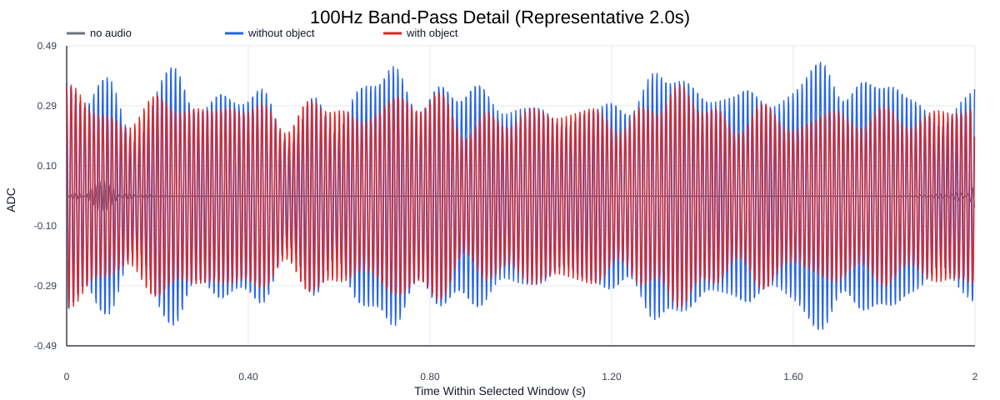
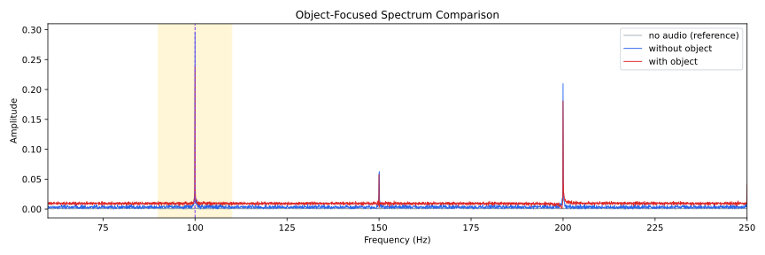
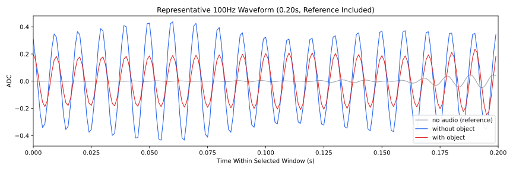
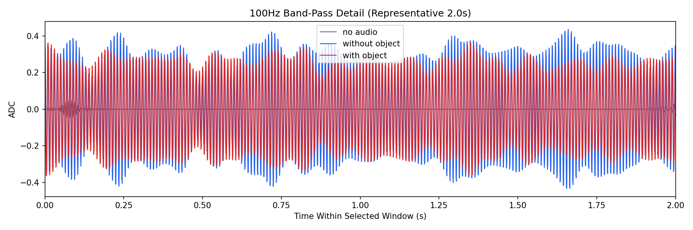
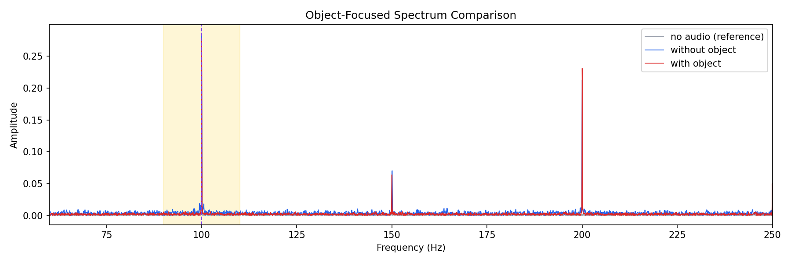
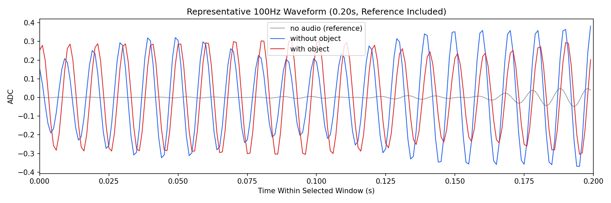

Background: F:\项目类文件夹\异物检测4.10\Data_Dual\frequency_sweep\0100Hz\repeat_03\raw\no_audio.csv
Without object: F:\项目类文件夹\异物检测4.10\Data_Dual\frequency_sweep\0100Hz\repeat_03\raw\without_object.csv
With object: F:\项目类文件夹\异物检测4.10\Data_Dual\frequency_sweep\0100Hz\repeat_03\raw\with_object.csv
| Metric | 无音频 | 100Hz无异物 | 100Hz有异物 | 无异物/无音频 | 有异物/无异物 | 有异物/无音频 |
|---|---|---|---|---|---|---|
| centered_rms | 0.080206 | 0.380715 | 0.765782 | 4.7467 | 2.0114 | 9.5477 |
| raw_target_amp | 0.001888 | 0.285456 | 0.277059 | 151.2284 | 0.9706 | 146.7800 |
| filtered_rms | 0.017898 | 0.218960 | 0.247836 | 12.2335 | 1.1319 | 13.8468 |
| filtered_target_amp | 0.001888 | 0.285456 | 0.277059 | 151.2284 | 0.9706 | 146.7800 |
| filtered_energy_ratio | 0.049799 | 0.330773 | 0.104742 | 6.6422 | 0.3167 | 2.1033 |
| window_filtered_target_amp_mean | 0.008301 | 0.299165 | 0.277966 | 36.0389 | 0.9291 | 33.4852 |
| window_filtered_target_amp_std | 0.009230 | 0.047209 | 0.050752 | 5.1148 | 1.0751 | 5.4987 |





